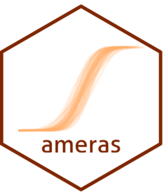

Simulated Data for ameras Examples
ameras_simulated.RdA simulated dataset containing 10 exposure realizations, covariates, effect modifiers, and outcomes for all six model families supported by ameras. The outcomes were generated under linear excess relative risk models. The dataset is intended for examples and demonstrations, not as a benchmark for recovering known simulation parameters.
Format
A data frame with 3,000 rows and 22 variables:
- Y.gaussian
A numeric continuous outcome.
- Y.binomial
A binary outcome coded as 0 or 1.
- Y.poisson
A nonnegative integer count outcome.
- time
Observed exit or follow-up time for proportional hazards models.
- status
Event indicator for proportional hazards models, coded as 0 or 1.
- setnr
Matched-set identifier for conditional logistic regression.
- Y.clogit
Case indicator for conditional logistic regression, coded as 0 or 1.
- Y.multinomial
A factor outcome with levels
"1","2", and"3".- X1, X2
Binary covariates coded as 0 or 1.
- M1, M2
Binary effect modifiers coded as 0 or 1.
- V1, V2, V3, V4, V5, V6, V7, V8, V9, V10
Numeric simulated exposure realizations.
Source
Simulated by the package authors for illustrating the functionality of ameras. The dataset contains no real participant data.
Examples
# The dataset is available directly because ameras uses lazy data.
head(ameras_simulated)
#> Y.gaussian Y.binomial Y.poisson time status setnr Y.clogit
#> 1 -0.32647093 0 0 0.30276565 0 1 0
#> 2 -0.18734036 1 0 0.19735142 1 1 1
#> 3 0.08404044 0 2 0.30276565 0 1 0
#> 4 0.22432504 0 0 0.23602584 1 1 0
#> 5 -0.46317255 0 0 0.30276565 0 2 0
#> 6 -1.41036573 0 0 0.07838133 1 2 0
#> Y.multinomial X1 X2 M1 M2 V1 V2 V3 V4
#> 1 3 0 0 0 1 0.42868043 0.61542487 0.41960219 0.49265549
#> 2 2 1 0 1 0 0.73321154 0.35512449 0.41876478 0.49235658
#> 3 2 0 0 1 0 0.70369712 0.43407408 1.04115924 0.79882088
#> 4 3 0 0 1 0 0.01845324 0.01373367 0.02733303 0.01912686
#> 5 3 1 0 0 0 0.39389441 0.40087181 0.61932032 0.51715526
#> 6 2 1 1 1 0 0.01493158 0.02335143 0.01828983 0.02705350
#> V5 V6 V7 V8 V9 V10
#> 1 0.31363762 0.42218455 0.42464021 0.29630858 0.38211182 0.45751570
#> 2 0.49515815 0.56837639 0.61126842 0.67723449 0.53361810 0.49393510
#> 3 0.66613754 0.72346942 0.64077434 0.79894534 0.98278177 1.06068250
#> 4 0.01917956 0.03056413 0.01536966 0.02135999 0.01548655 0.01596626
#> 5 0.36440322 0.60255525 0.47512525 0.52567606 0.53391825 0.56026531
#> 6 0.02298922 0.02399258 0.01890339 0.02094013 0.02303085 0.02091743